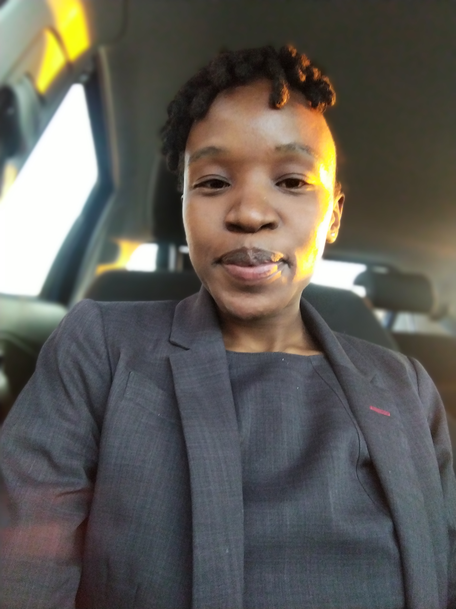

My name is Raisibe Hilda Mothiba, and I am a passionate and optimistic law graduate who is dedicated to personal growth and community development. I find joy in learning, meeting new people, and contributing positively to every space I’m part of. I earned my LLB from the University of Johannesburg in 2022, and I have since expanded my knowledge through certifications in banking, risk management, money laundering control, and forensic auditing. These credentials have deepened my expertise in legal and financial fields, showcasing my commitment to continuous learning.
I began my professional journey with Capitec Bank as a Service Consultant, where I excelled in identifying client needs and providing effective solutions. This role allowed me to refine my interpersonal and problem-solving abilities while making a meaningful impact on client satisfaction.Currently, I have advanced into the role of an IMI Trainee at Capitec Bank, where I continue to build on my expertise, tackle new challenges, and contribute to innovative solutions.
Beyond my professional pursuits, I enjoy balancing my life with hobbies like reading for leisure, playing chess, and swimming—activities that keep me inspired and focused. Fluent in English, Sepedi, Setswana, and Isizulu, I’m able to connect and engage with people from diverse backgrounds with ease.
Along the way, I’ve gained hands-on experience through impactful programs, such as the Bowmans Virtual Experience Programme, the CIArb student programme in Alternative Dispute Resolution, and a 16-week law clinic, all of which sharpened my communication, organization, and teamwork skills.In addition to my professional growth, I have developed a foundational understanding of Java and HTML, which adds to my versatility and adaptability in various roles. I am reliable, approachable, and driven, I possess strong skills in Microsoft Office, exceptional time management, and an unwavering dedication to achieving excellence. I look forward to continuously growing and making a lasting impact in every role I take on.
You can learn more about my journey and connect with me professionally through my Linkedin profile